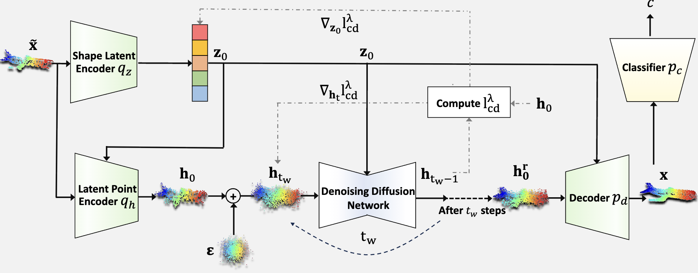
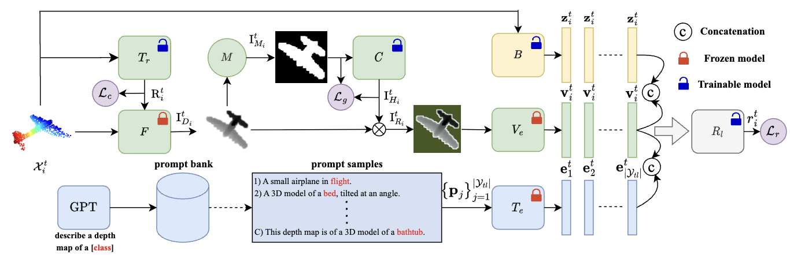
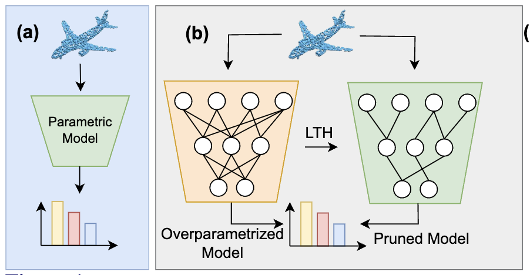
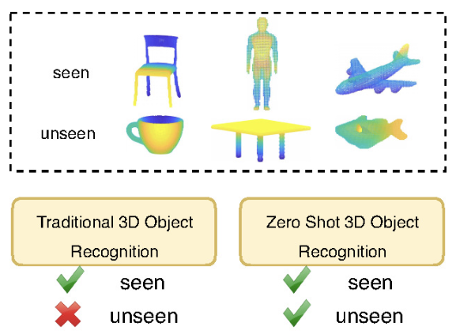
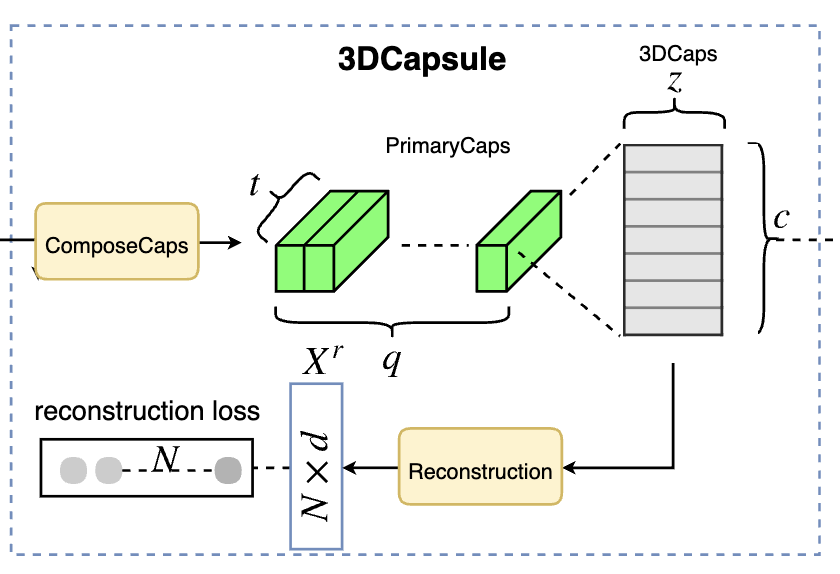
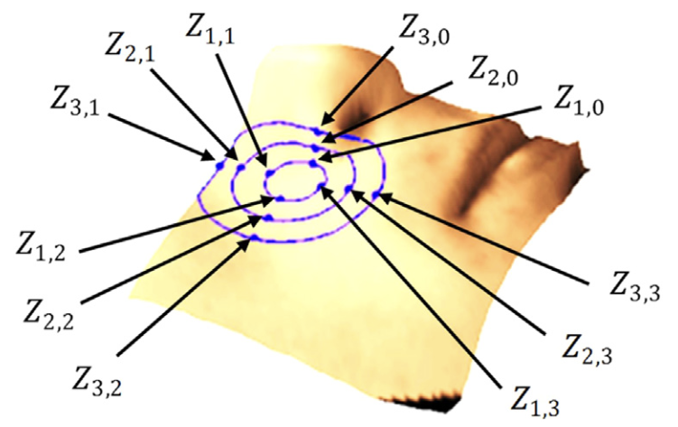

News
- Our paper "Test-Time Adaptation of 3D Point Clouds via Denoising Diffusion Models" has been accepted to WACV'25
- Our paper "Canonical shape projection is all you need for 3d few-shot class incremental learning" has been accepted to ECCV'24
- Our paper "Backpropagation-free Network for 3D Test-time Adaptation" has been accepted to CVPR'24
- Our paper "Continual test-time domain adaptation via dynamic sample selection" has been accepted to WACV'24
- Our paper "Foundation Model-Powered 3D Few-Shot Class Incremental Learning via Training-free Adaptor" has been accepted to ACCV'24
- Our paper "3D Point Cloud Network Pruning: When Some Weights Do not Matter" has been accepted to BMVC'24
- Our paper "3D scene generation for zero-shot learning using ChatGPT guided language prompts" has been accepted to CVIU'24
- Our papers "Efficient Atmospheric Correction" and "Enhancing Glaucoma Diagnosis" have been accepted to DICTA'24
Publications
Citations Over Time
Citation Metrics
Total Citations
726
h-index
11
i10-index
11
Publications
2025
-

Test-Time Adaptation of 3D Point Clouds via Denoising Diffusion Models
H Dastmalchi, A An, A Cheraghian, S Rahman, S Ramasinghe
WACV 2025
2024
-
Backpropagation-free Network for 3D Test-time Adaptation
Y Wang, A Cheraghian, Z Hayder, J Hong, S Ramasinghe, S Rahman
CVPR 2024 -
 Continual test-time domain adaptation via dynamic sample selection
Continual test-time domain adaptation via dynamic sample selection
Y Wang, J Hong, A Cheraghian, S Rahman, D Ahmedt-Aristizabal
WACV 2024 -

Canonical shape projection is all you need for 3d few-shot class incremental learning
A Cheraghian, Z Hayder, S Ramasinghe, S Rahman, J Jafaryahya
ECCV 2024 -
 Foundation Model-Powered 3D Few-Shot Class Incremental Learning via Training-free Adaptor
Foundation Model-Powered 3D Few-Shot Class Incremental Learning via Training-free Adaptor
S Ahmadi, A Cheraghian, M Saberi, MT Abir, H Dastmalchi, F Hussain
ACCV 2024 -

3D Point Cloud Network Pruning: When Some Weights Do not Matter
A Biswas, MI Hossain, MM Elahi, A Cheraghian, F Rahman
BMVC 2024 -
 3D scene generation for zero-shot learning using ChatGPT guided language prompts
3D scene generation for zero-shot learning using ChatGPT guided language prompts
S Ahmadi, A Cheraghian, TF Chowdhury, M Saberi, S Rahman
CVIU 2024 -
 Efficient Atmospheric Correction for Onboard Processing Using Knowledge Distillation and Model Compression
Efficient Atmospheric Correction for Onboard Processing Using Knowledge Distillation and Model Compression
M Zhang, A Cheraghian, Y Qin, D Benn, T Rollan, N Habili
DICTA 2024 -
 Enhancing Glaucoma Diagnosis through Vision-Language Models and Large Language Model Descriptions
Enhancing Glaucoma Diagnosis through Vision-Language Models and Large Language Model Descriptions
HY Bae, M Saberi, S Shariflou, M Kalloniatis, J Phu, A Agar, A Cheraghian
DICTA 2024
2023
-
 ChatGPT-guided Semantics for Zero-shot Learning
ChatGPT-guided Semantics for Zero-shot Learning
FH Shubho, TF Chowdhury, A Cheraghian, M Saberi, N Mohammed
DICTA 2023
2022
-
 Zero-shot learning on 3d point cloud objects and beyond
Zero-shot learning on 3d point cloud objects and beyond
A Cheraghian, S Rahman, TF Chowdhury, D Campbell, L Petersson
IJCV 2022 -
 Few-shot class-incremental learning for 3d point cloud objects
Few-shot class-incremental learning for 3d point cloud objects
T Chowdhury, A Cheraghian, S Ramasinghe, S Ahmadi, M Saberi
ECCV 2022 -
 Prompt-guided scene generation for 3d zero-shot learning
Prompt-guided scene generation for 3d zero-shot learning
M Nasiri, A Cheraghian, TF Chowdhury, S Ahmadi, M Saberi, S Rahman
DICTA 2022
2021
-
Semantic-aware knowledge distillation for few-shot class-incremental learning
A Cheraghian, S Rahman, P Fang, SK Roy, L Petersson, M Harandi
CVPR 2021 -
 Synthesized feature based few-shot class-incremental learning on a mixture of subspaces
Synthesized feature based few-shot class-incremental learning on a mixture of subspaces
A Cheraghian, S Rahman, S Ramasinghe, P Fang, C Simon, L Petersson
ICCV 2021 -
 Learning without forgetting for 3d point cloud objects
Learning without forgetting for 3d point cloud objects
T Chowdhury, M Jalisha, A Cheraghian, S Rahman
IWANN 2021
2020
-
 Transductive zero-shot learning for 3d point cloud classification
Transductive zero-shot learning for 3d point cloud classification
A Cheraghian, S Rahman, D Campbell, L Petersson
WACV 2020
Earlier Publications
- 
-

3dcapsule: Extending the capsule architecture to classify 3d point clouds
A Cheraghian, L Petersson
WACV 2019 -

Surface geodesic pattern for 3D deformable texture matching
F Hajati, A Cheraghian, S Gheisari, Y Gao, AS Mian
Pattern Recognition 2017